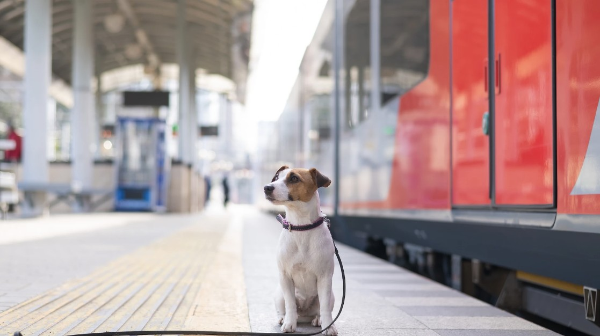
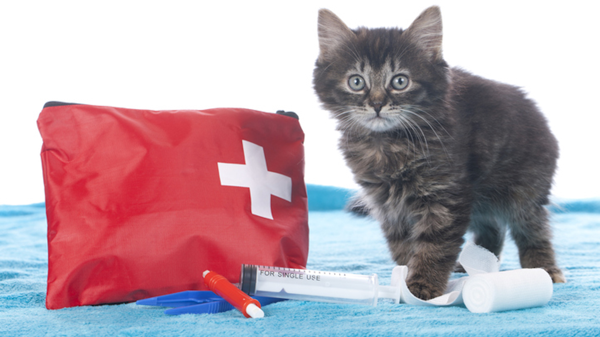
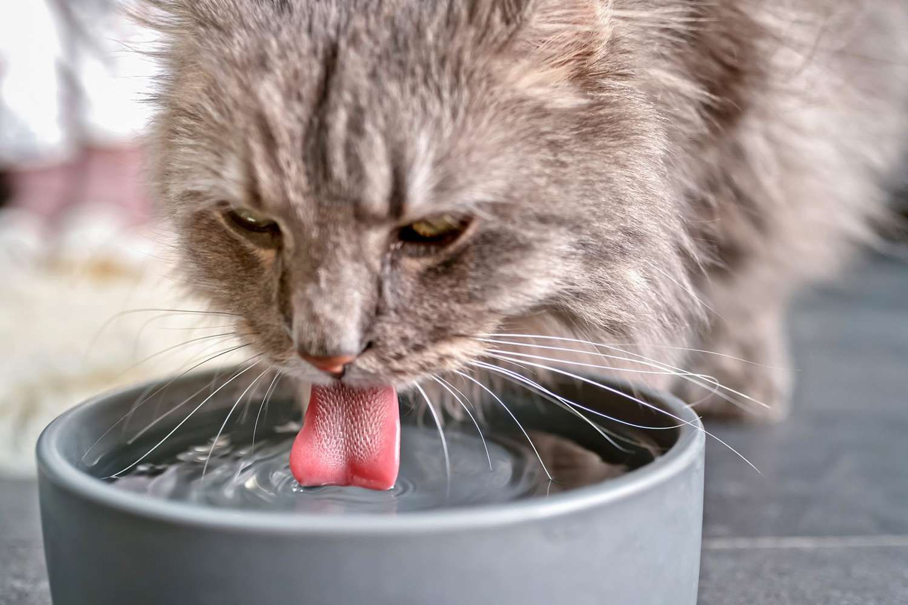

Check the Railway's Pet Regulations
Before booking your tickets, check the railway company's policies for traveling with pets. Different services may have different rules regarding the types of animals permitted, carrier dimensions, ticket requirements, and where pets are allowed to sit or travel. Some trains may only allow small pets in carriers, while others may have additional restrictions or may not permit pets at all. Make sure you understand the requirements for your entire journey, especially if you need to transfer between different railway services. Planning ahead can help prevent unexpected problems and ensure that both you and your pet are prepared for the trip.

Choose a Secure and Comfortable Carrier
A suitable pet carrier can help keep your pet safe and comfortable while traveling by train. Choose one that is appropriately sized for your pet, has secure closures, and provides adequate ventilation. Your pet should have enough room to stand, turn around, and lie down comfortably. Before your trip, give your pet time to become familiar with the carrier at home by introducing it gradually with treats, toys, or familiar bedding. During the journey, keep the carrier secured and follow the railway's instructions about where it must be placed. Avoid opening the carrier in crowded stations or other unfamiliar areas, as frightened pets may try to escape. A comfortable, secure carrier can help make the journey less stressful for everyone.

Keep Your Pet Hydrated and Comfortable
Long train journeys can mean spending several hours away from home, so it's important to bring supplies for your pet. Pack fresh drinking water, a portable water bowl, some of their regular food, waste bags, and any necessary medications. Offer water regularly throughout the trip and provide bathroom breaks whenever it is safe and permitted to do so. Avoid feeding your pet a large meal immediately before leaving if they are prone to motion sickness, and ask your veterinarian for advice if travel tends to upset their stomach. Familiar items may also help your pet settle in. Preparing these essentials ahead of time can help keep your furry companion comfortable during the journey.
Final Reminder
A safe train journey starts with preparation. Keep your pet supervised throughout the journey and follow the railway's rules at stations and on board. With a little planning, you can help make train travel a more enjoyable experience for both you and your furry companion. Happy travels!